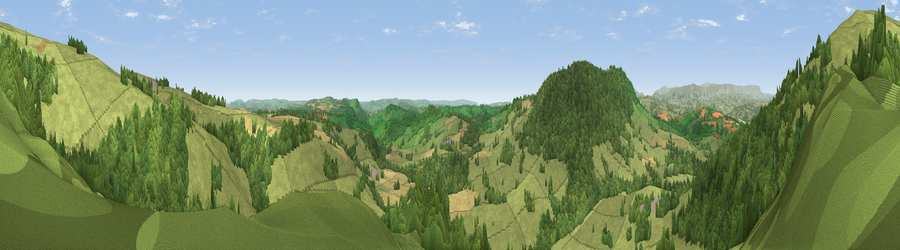

Viewpoint near Garway
#11124 in England · top 30% of its area beats it · near GarwayThe view, rendered

A 360° render of this exact spot computed from the terrain model, tree cover and land cover — summer colours, afternoon light, calibrated against photographs of famous viewpoints. Real trees, hedges and buildings will differ in detail.
The panorama
Grey silhouette: terrain skyline in each direction (720 bearings, Earth curvature and refraction included). Dashed green: skyline with trees (+15 m) and buildings (+8 m) as obstacles. Blue strip: how far the ground is visible on each bearing.
Where the view opens
Wedge length = distance to the farthest visible ground on that bearing (vegetation-aware). Rings at 10, 25 and 50 km.
What fills the view
58% grassland · 37% woodland · 4% cropland
Angular shares of the visible panorama (visual magnitude), not map area. Landscape diversity 0.36 (0–1 Shannon).
Key numbers
More beautiful places nearby
The staircase of upgrades: each row has a higher view potential than everything closer. Driving times are estimates from straight-line distance, calibrated against real road routing — check an actual route before setting out.
| Place | Direction | Drive | Score |
|---|---|---|---|
| Garway Hill | NNW · 1 km | ~3 min | 84.6 |
| Millennium Hill | ENE · 36 km | ~54 min | 86.9 |
| Worcestershire Beacon | ENE · 39 km | ~58 min | 87.1 |
| Viewpoint near West Quantoxhead | SSW · 87 km | ~112 min | 87.9 |
| Viewpoint near West Quantoxhead | SSW · 88 km | ~112 min | 88.7 |
| Holdstone Hill | SW · 112 km | ~136 min | 90.2 |
| The Knoll | S · 136 km | ~160 min | 91.0 |
51.91102, -2.81732 · source: screening · position refined by local search. Computed location — check access rights before visiting.